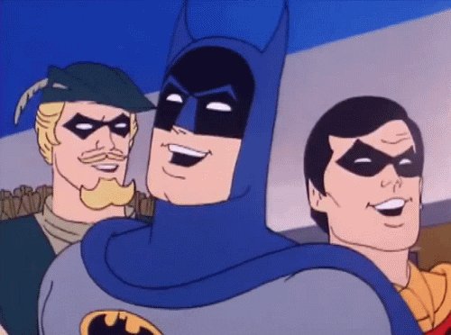

Super Heroes
Durante la última década de la Edad de Plata, DC Comics, establecería que la Liga de la Justicia se encontraba en el universo que se denominaba Tierra-1. La Liga de la Justicia mantenía su primera sede en una cueva llamada El Refugio en Happy Harbor, Rhode Island. La Liga de la Justicia había empezado una tradición anual con sus homólogos de la Edad de Oro, la Sociedad de la Justicia de América, que correspondía en el Multiverso DC a Tierra-2, que resultó dicha historia en el Justice League of America Vol. 1 #21. Durante una de estas reuniones en equipo, la JLA y la JSA se encontraron en una aventura que involucró a una versión malvada de ellos mismos llamada el Sindicato del Crimen de América, que correspondía a un universo llamado la Tierra-3. Por ese entonces, la Liga de la Justicia añadió otros miembros a la formación original incluyendo a Flecha Verde, el Átomo (Ray Palmer), Hombre Halcón y a Canario Negro (esta última, procedente de Tierra-2, que había decidido migrar a Tierra-1, dejando a la Canario Original, su madre, Dinah Drake), debido a una batalla con el villano Aquarius, Larry Lance quien se había casado con ella fue asesinado, y deseando empezar de nuevo Dinah se mudó definitivamente a Tierra-1 donde se unió a la Liga de la Justicia de América.
